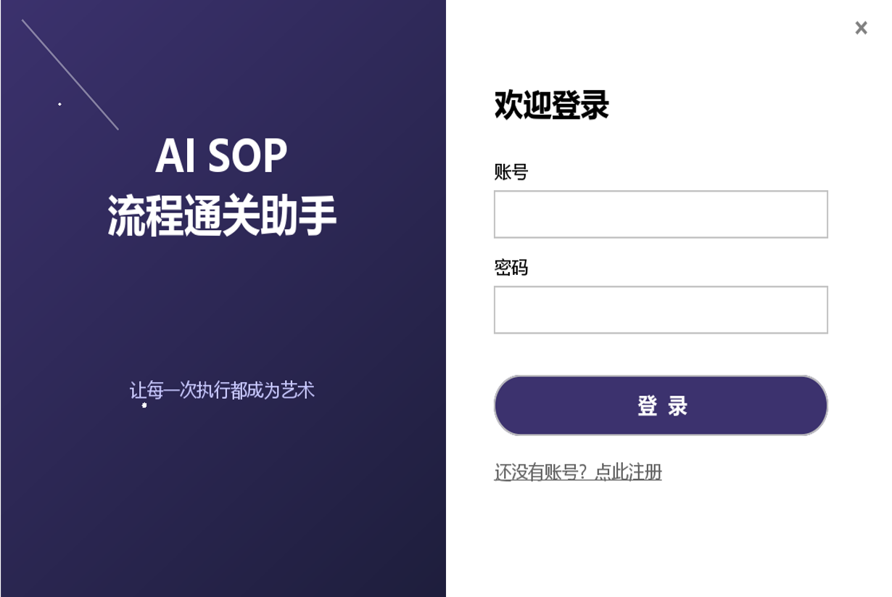
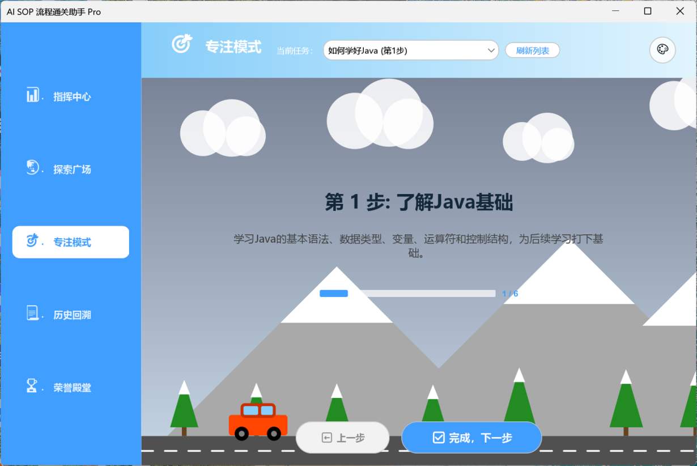
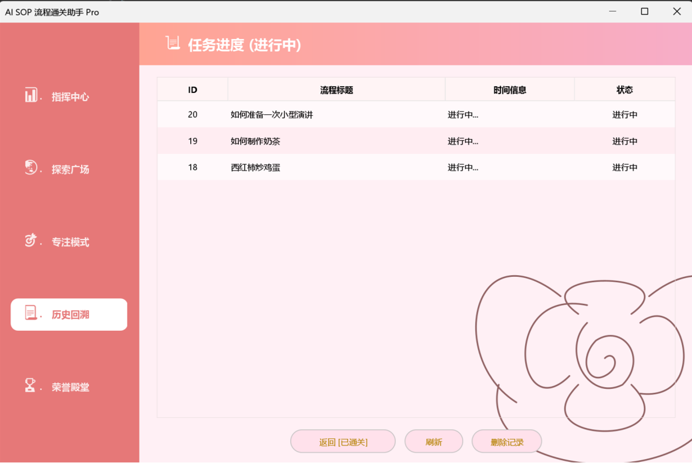
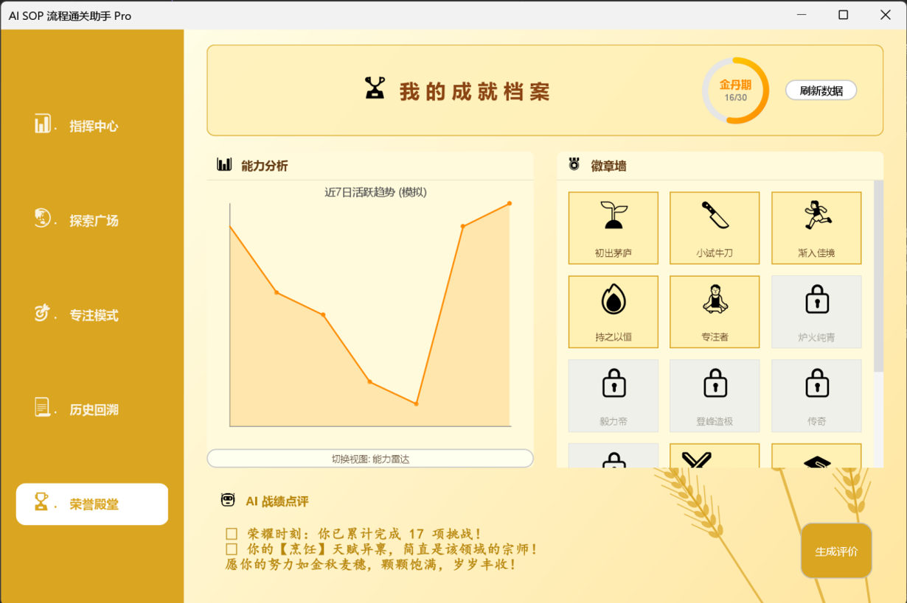

SOP流程通关助手
这是一个旨在帮助用户快速熟悉标准化作业流程（SOP）的辅助工具。通过直观的交互设计，用户可以更高效地掌握复杂的业务逻辑。
系统核心界面一览
1. 系统登录界面
2. 探索广场步骤管理与编辑

3. SOP步骤执行与通关
4. 历史记录查看与管理
5. 成就档案与能力可视化分析
核心技术架构 Java MySQL
本项目后端核心采用稳健的 Java 语言编写，确保了系统在高并发场景下的稳定性。数据持久层连接 MySQL 数据库，结构化存储用户的学习进度、操作日志及问答记录，构建了可靠的数据基石。
AI智能赋能 集成DeepSeek
系统集成了先进的 DeepSeek API 大语言模型。当用户在流程学习中遇到疑惑并发起提问时，系统能实时调用 AI 生成精准解答，并将提问回答对自动沉淀至数据库，逐步构建起智能化的 SOP 知识图谱。
交互体验 游戏化通关系统
为了摆脱枯燥的学习体验，系统设计了按步骤通关机制。用户必须完成当前步骤的考核才能解锁下一关。后台会自动记录通关次数与表现，并结合成就系统给予反馈奖励，极大提升了用户的学习动力和沉浸感。